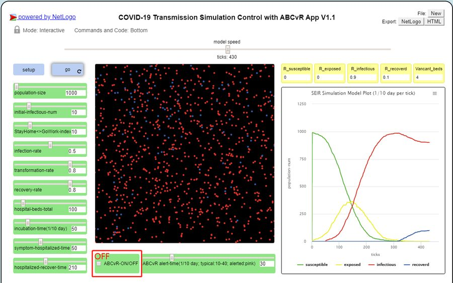
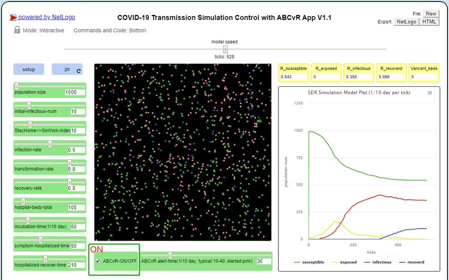

04 · Jan – Jun 2020 · Civic tech
ABC Virus Radar
In the first weeks of COVID-19, I designed and built a contact-warning app for WeChat. It was released on February 8, 2020, two months before Apple and Google announced their joint exposure-notification framework.
- Role
- Concept, product and UI design, logo, development, simulation and documentation
- Platform
- WeChat Mini Program; WeChat Cloud Development (Node.js cloud functions, document database with geospatial queries); Tencent Maps
- Registered
- U.S. Copyright Office TX 8-886-536 (computer program, 2020) · China software copyright 2020SR1053878 (V1.1, 2020)
- Timeline
- Started on Lunar New Year 2020 in New York · released Feb 8 · enterprise mode in March · privacy-first v2 design in June

Record, share, scan
Record: the phone notes its location every 10 minutes and keeps the history only on the device. Share: people who test positive (or are suspected) upload their last 14 days of locations. Scan: everyone else checks their own history against the shared data. A match within about 5 metres and 10 minutes produces an early risk warning.
The name comes from the transmission chain the app targets: an infected person (A) unknowingly meets strangers in public (B), who then infect the people close to them (C). Warning the B group early can break the chain. An enterprise mode let a company share alerts within its own group.
Testing the idea
To test whether early warnings could matter, I built an agent-based SEIR simulation in NetLogo and ran it with the app switched on and off. With the app on, the infection curve flattened noticeably.


A privacy-first v2
By June 2020 I had specified a second version that would work passively and without a central location record: "always listen, seldom talk." Phones would turn rough location, a time slot and an acoustic fingerprint of the surroundings into hashed contact-event IDs, with three privacy levels. This version was written up as a specification and user manual; it was not built.